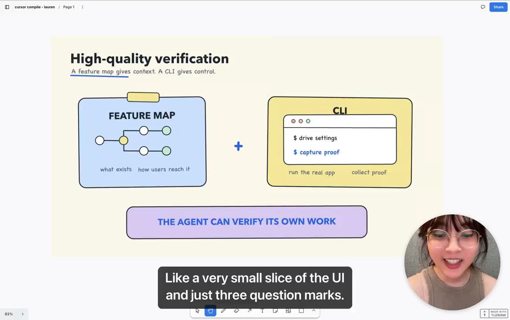
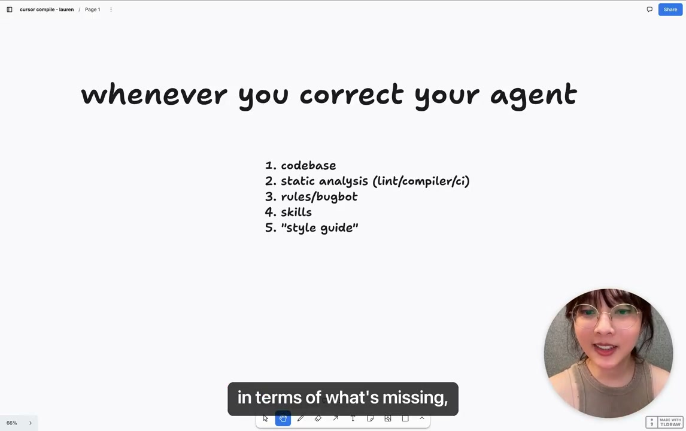
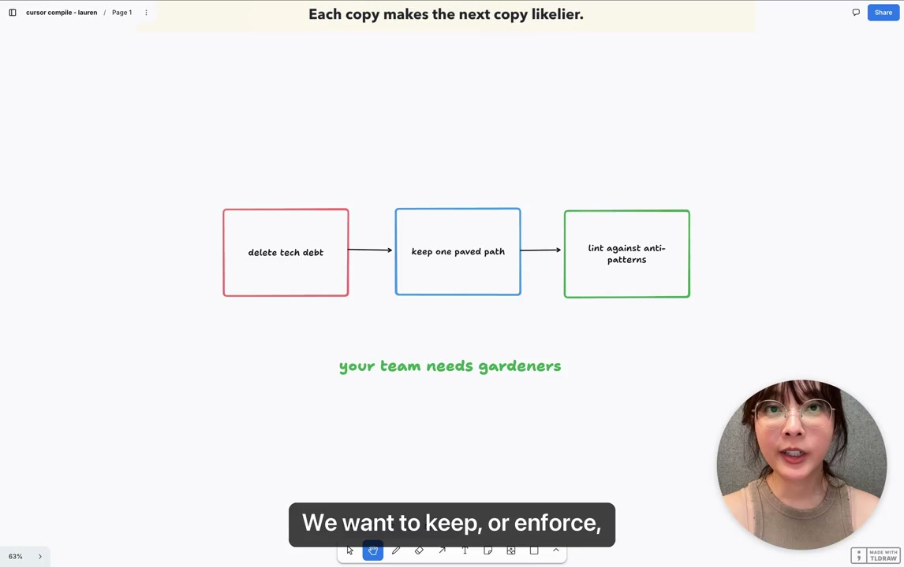
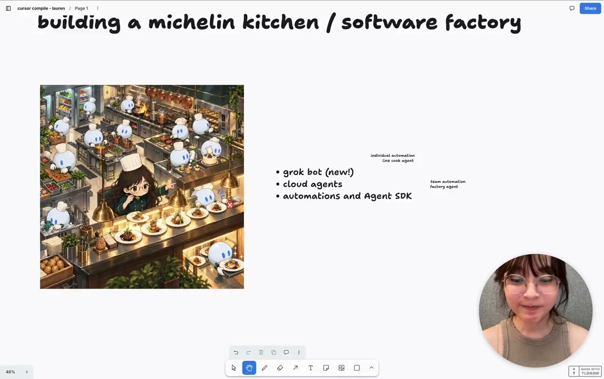

Executive summary
Agent autonomy is the output of environmental engineering
Lauren Tan, known online as Poteto, argues that teams do not reach high agent throughput by writing one better prompt or starting one hundred workers. They reach it by repeatedly removing the reasons an agent needs a human: give it a deterministic way to operate the product, a map of how the product works, executable quality checks, a codebase whose easiest path is the correct path, and an outer loop that supplies current operational context.
Her preferred metaphor is a Michelin kitchen rather than a software factory. The goal is not interchangeable mass production. It is coordinated creative work in an environment where equipment, stations, training, cleanup, safety, and quality standards allow many contributors to produce a coherent result. The human remains accountable for what leaves the kitchen even when agents perform more of the individual steps.
- Trust comes before parallelism. Scaling low-trust agents multiplies regressions, review load, and low-quality pull requests.
- Verification needs both hands and context. A CLI lets the agent control the real product; a feature map tells it what the product contains and how users reach each capability.
- The codebase is durable memory. Agents copy nearby patterns. Good architecture compounds; workarounds and anti-patterns compound too.
- Corrections should move downward. Prefer architecture and data structures, then static analysis, then rules and review agents, then skills, leaving a human-only style guide as the weakest backstop.
- Automation belongs at the end. Grokbot routines and cloud agents become useful after the inner engineering loop can verify and constrain its own work.
Evidence boundary. This article is based on Tan's public talk and its supplied caption track. The post description says “2,500 PRs,” while Tan says “2,000 pull requests” in the recording. Neither figure is independently audited here, and PR count alone does not establish quality, product impact, or safety.
The central constraint
The human bottleneck is usually a trust problem
Tan begins with performance work on Cursor's new agents window. The product was changing quickly, but detecting regressions still required her to inspect Chrome DevTools traces and heap snapshots manually. Code generation was fast; empirical judgment remained serial. Her question changed from “How can the agent write this code?” to “How can the agent run the product, collect the same evidence I use, identify the hotspot, and iterate toward a measurable improvement?”
That reframing explains her trust curve. With one to five agents, the operator can watch every session, correct every misunderstanding, and relay every observation. Trying to jump directly to one hundred agents does not remove that work. It produces one hundred streams of uncertain output. More parallelism becomes useful only after fewer tasks require intervention.
Low trust
A person watches every chat, runs the application, interprets evidence, and tells the agent what to do next.
Earned trust
The agent can operate the product, verify observable outcomes, and follow stable engineering workflows.
Scaled trust
Bounded tasks run in parallel because failures are visible, known bad states are blocked, and escalation remains possible.
Verification infrastructure
A CLI gives the agent hands; a feature map gives it orientation
Tan's first verification skill, Control Glass, used the Chrome DevTools Protocol to run the application, capture traces, and inspect performance evidence. The important design choice was to package the mechanical operation as a maintained CLI. Without that tool, every session could invent a different script and rediscover the same integration failures. The CLI makes evidence collection reproducible.
Control alone was not enough. When a Slack report contained a tiny screenshot and a few question marks, the agent could launch the product but did not know which feature the report referred to. Tan added a feature map: materialized product memory describing available features, navigation paths, shortcuts, relevant DOM elements, and expected behavior. An automation keeps that map current.

The distinction matters for any agentic platform. A tool declaration says what action exists. It does not explain when the action is relevant, how the user reaches the affected workflow, which evidence proves success, or what uncertainty should trigger escalation. A robust skill joins those elements into a closed loop.
Beyond correctness
A working feature can still be poor engineering
Verification answers a narrow question: did the requested behavior work? It does not automatically answer whether the change is fast, maintainable, secure, or consistent with the system. Tan places engineering playbooks such as debugging, prototyping, and feature-development skills above the basic control loop. Experienced engineers can encode how they investigate and judge work, while runtime metrics provide evidence that the process improved the actual product.
This is the role Tan assigns to pstack: not a magic prompt pack, but a collection of workflows derived from real engineering practice. The strongest version combines a domain-specific verification skill with team-specific methods. The agent learns both how to check the product and how the team expects engineering work to proceed.
Platform implication. Keep “can perform the action,” “can verify the user outcome,” and “can judge engineering quality” as separate capabilities. Bundling them into one persona prompt makes failures hard to diagnose and governance hard to enforce.
The correction ladder
Move repeated lessons from prose into structure
Tan presents five places a correction can live. They are not equally reliable. A style guide depends on a person remembering to inspect every line. A skill is reusable but can be skipped or misapplied. A rule or review agent provides stronger guidance. Static analysis rejects a class of error mechanically. Architecture and data structures are strongest when they make the wrong state impossible to express.

Codebase
Architecture, types, data structures, and APIs make the intended path natural or unavoidable.
Static analysis
Compilers, linters, dependency rules, and CI reject known bad patterns before merge.
Rules and review bots
Contextual guidance and automated review catch issues that are not yet structural invariants.
Skills
Reusable workflows teach investigation and judgment but still depend on correct invocation and execution.
Style guide
Human memory and manual review remain useful, but they cannot carry a high-throughput system alone.
The practical rule is simple: when a human corrects the same behavior twice, stop polishing the wording first. Ask whether the repository can encode the lesson in a form that every future contributor—human or agent—will encounter automatically.
Codebase as memory
Agents copy the system they see, including its compromises
Files opened by an agent become part of its context. That makes the repository a materialized snapshot of what the organization currently accepts. A coherent pattern increases the probability that the next change will follow it. A workaround, copied repeatedly, can become an accidental standard within days.
Tan's sharpest example is code comments. In the environment she describes, agents sometimes used nearby comments as justification for preserving a workaround instead of fixing the underlying design. Dune, the agent-oriented framework behind Grokbot, therefore bans comments. This is a local policy, not a universal recommendation: many codebases need comments for rationale, constraints, safety, or non-obvious behavior. The transferable lesson is to inspect what agents use as permission for shortcuts and redesign that surface deliberately.
Her Dune example also enforces process boundaries. Code meant for Electron's main process cannot leak into the renderer, protecting the UI thread from expensive work. The framework co-locates features, defines explicit entry points, and narrows import paths. The agent does not need to remember every performance lesson because the dependency graph carries part of that memory.
Maintenance model
A high-throughput team needs gardeners, not only builders
Tan compares the codebase to a garden. Small workarounds can spread because each new agent sees prior output as precedent. The team needs someone—or a bounded automated process—watching for emerging patterns before they become the default.

- Delete existing tech debt. A repository full of exceptions teaches agents to produce more exceptions.
- Keep one paved path. Stable conventions reduce guessing about where code belongs and how components interact.
- Lint against recurrence. A new rule can stop the bleeding even when the team cannot immediately clean every old instance.
- Use agents for cleanup. Once the invariant is explicit, agents can migrate old code under measurable constraints.
The gardener role is system maintenance, not cosmetic cleanup. Its output is a repository that future agents can imitate safely.
Operating model
The Michelin kitchen preserves responsibility while distributing work
Tan rejects “software factory” because software is not identical output moving down an assembly line. A kitchen better captures creative coordination. Line cooks, sous chefs, equipment, stations, training, and dishwashing all affect quality. The executive chef may not prepare every component, but remains responsible for the finished dish and for improving the environment when people repeatedly fail.

This metaphor also exposes a scaling error. Adding more cooks to a chaotic kitchen makes it more dangerous. Adding more agents to a weak repository makes review and regressions grow faster than useful output. The environment—not agent count—is the real scaling variable.
Outer and inner loops
Grokbot supplies changing context; coding agents execute bounded work
In Tan's description, Grokbot connects to operational systems such as Slack, Datadog, Sentry, and PlanetScale. Routines subscribe to signals and can launch cloud agents when an event deserves investigation. Cursor automations and an agent SDK reuse the verification, skills, rules, and repository constraints already built for interactive work.
Outer loop
Observe reports and telemetry, gather current organizational context, group related signals, and decide whether work should begin.
Inner loop
Inspect the repository, reproduce the problem, make a bounded change, verify the result, collect evidence, and prepare a pull request.
The architecture is deliberately less mystical than a universal “company brain.” Tan's argument is that capable agents can use existing tools and connectors directly. The hard work is ensuring that the inner loop is trustworthy enough to receive an event without requiring a person to supervise every step.
Practical adoption
Climb the trust curve one repeated intervention at a time
- Choose one frequent, reversible workflow. Avoid beginning with the broadest or riskiest process.
- Record human intervention. Note what the person had to operate, explain, inspect, and decide.
- Build a deterministic control surface. Give the agent a stable CLI or API for the real system rather than asking it to generate ad hoc scripts.
- Create a feature map. Document how users reach the workflow, what state matters, and which evidence proves success.
- Turn repeated corrections into constraints. Prefer architecture and static analysis before adding more prose.
- Measure trust operationally. Track intervention rate, escaped regressions, rollback, repeated failure classes, verification coverage, and outcome quality—not only PR count.
- Add triggers and parallelism last. Automation should reuse an already reliable inner loop.
For a multi-agent platform. A BA-friendly building block should be a versioned work contract: business intent, trigger, context sources, allowed tools, deterministic steps, verification procedure, evidence output, escalation conditions, and owner. Personas can shape communication, but contracts make composition and governance possible.
My take
The strongest idea is not autonomy; it is organizational learning
The talk is persuasive because it treats trust as an engineered property. Every intervention is evidence of missing infrastructure. Instead of teaching one session to behave, the team asks where the lesson should live permanently: a product map, CLI, type, import boundary, linter, rule, skill, or review policy.
The method still needs discipline. A locked-down framework can encode the wrong assumptions. A feature map can become stale. A passing verification loop can optimize the wrong metric. Automated routines can turn one mistaken signal into a fleet of unnecessary changes. Teams therefore need versioned constraints, independent outcome measures, sampled review, rollback, and explicit authority boundaries.
The headline throughput number is a distraction if read as a target. The useful result is a system that can explain why work began, what authority the agent had, which evidence justified completion, what escaped, and how the environment changed afterward. That is the difference between multiplying output and compounding capability.
Video map
Where the main ideas appear
- PR-volume claim, trust, and the Michelin-kitchen thesis
- Manual performance investigation and the need for verification
- The trust curve and why scaling low-trust agents fails
- Verification from runtime evidence to formal methods
- Control Glass, repeatable CLI tooling, and Chrome DevTools
- Feature maps plus control surfaces
- Correctness, quality, and pstack workflows
- Codebase memory and the five-layer correction hierarchy
- Dune and making the easy path the right path
- Anti-pattern propagation, comments, and the garden metaphor
- Delete debt, keep one paved path, and lint recurrence
- Process boundaries and renderer-thread performance
- Building the Michelin kitchen
- Grokbot connectors, routines, cloud agents, and automations
- Final five-layer checklist for every repeated correction
Sources
Primary talk and related public material
- Lauren Tan (Poteto) — “here's how I shipped 2,500 PRs last month to production”. Primary 38-minute recording and publisher-supplied English caption track.
- Lauren Tan / Poteto — pstack. Public skill collection and engineering principles related to the workflows discussed in the talk.
- Lauren Tan: Build Trust Before You Scale Coding Agents. Earlier workshop summary covering verification, feature maps, evals, and agent-friendly architecture in more depth.
- The System Behind 2,500 Agent-Written PRs. Related interview summary with more detail on coordinator agents, review sampling, bounded autonomy, and what the PR count includes.
Source review completed October 5, 2026. The recording was downloaded from the public X post at 1146×720; all five article images are direct frames from that file. Internal Cursor, Grokbot, Dune, and SpaceX AI details are presented as Tan's public claims, not as independently verified architecture.